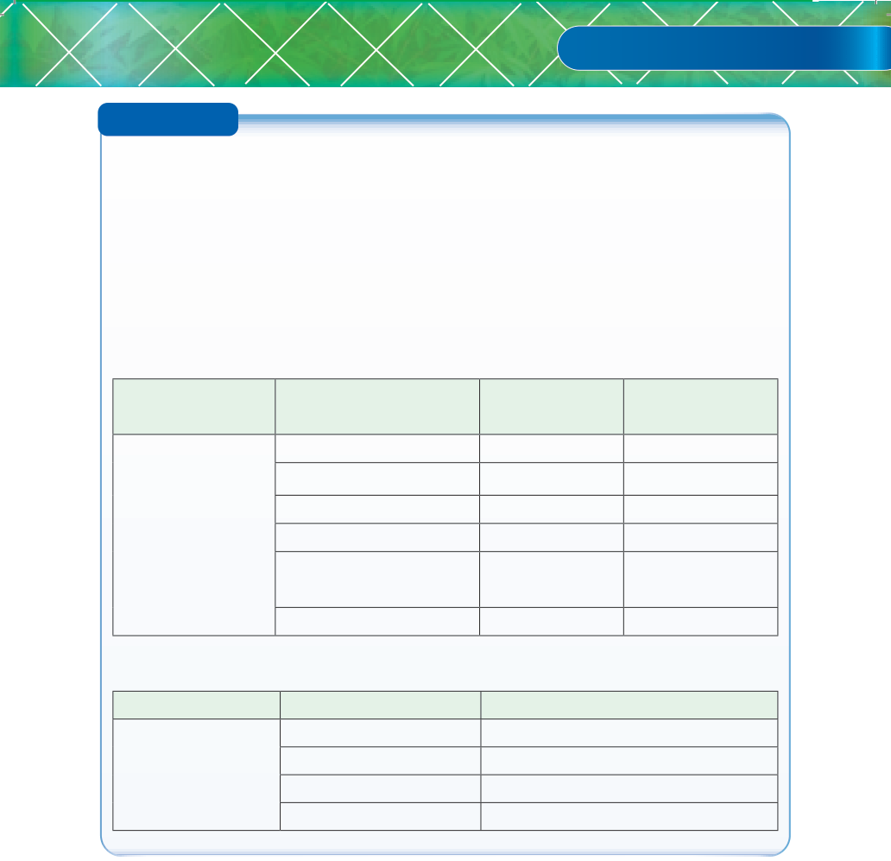

Activity 6.4
1. Visit a school or nearby livestock farms and do a library/internet search.
Then perform the following tasks:
(a) Identify signs/behaviours of healthy and unhealthy animals;
(b) Identify common vices of the livestock you visited; and
(c) Observe how ill health and vices are controlled on the farm.
2. Tabulate your observations in task 1 above, as shown here after,
(a) Signs/behaviours of healthy and unhealthy animals
Type of livestock Healthy parameters
(where applicable)
Healthy signs/
behaviours
Unhealthy
signs/behaviour
General appearance
Movement
Appetite and feeding
Urine colour
Faeces and
defaecation
Breathing
(b) Common vices in farm animals
Type of livestock
Common vices
Management measures
Causes of poor health in livestock
Poor health in livestock is associated with several causes, including poor feeding,
poor hygiene, poor housing, parasite infestation, injuries due to poor handling,
and microorganisms or pathogens.
(a) Poor feeding: Feeds and feeding play a significant role in providing good
health. Inadequate feeding and poor-quality feeds can lead to nutritional
disorders like cannibalism and egg-eating in chickens. Excessive feeding
may lead to bloat, obesity in layer chickens, diarrhoea, or constipation.